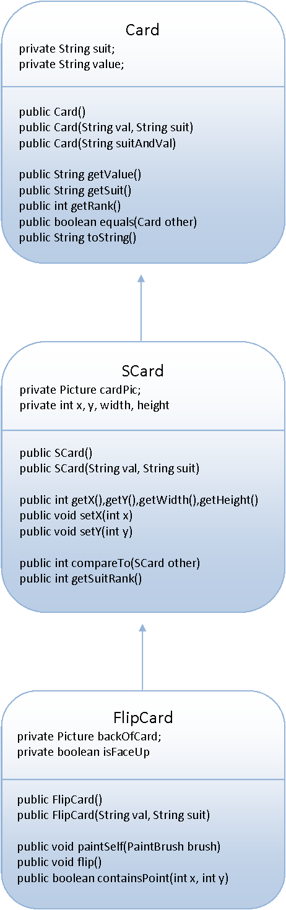
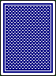

Previously, you've extended the Card class to have support for use with SaccoWindows. This created the SCard class. Today, we are going to create an extension of the SCard class named FlipCard.
FlipCard's purpose is to have multiple displays. One where the original Card is showing, and one where the back of the card is showing.
Create the class FlipCard, which extends the SCard class.
Instance Fields: The FlipCard class will already be able to handle the suit, value, x, and y, but there are two more instance fields that will be good to add.
1) private boolean isFaceUp: This will be the way that the FlipCard knows if it should display the face or the back of the card.
2) private Picture backofCard: This will be the image that is displayed when the FlipCard is face down. You have a choice between two images that you can load from the jar. Pick one.
You should not add a second Picture as an instance field. The SCard class already loads the face up version. Since we're inheriting it, we should not have a duplicate.
| "cards/b1fv.png"  |
"cards/b2fv.png" |
Constructors: The FlipCard class should have the same two Constructors that the SCard class does. Implementing them should be rather simple. Each makes a call to super and then sets the two instance fields that FlipCard created. The isFaceUp variable should be set to true (face up).
Methods: There are two methods than need to be created, and one that must be overridden.
1) void flip(): This method will set the isFaceUp variable to its opposite.
2) boolean containsPoint(int x, int y): This method will be used to tell if this FlipCard was clicked or not. It returns a true if the given x and y are located within the boundaries of the current FlipCard. You should be using the getX,getY,getWidth, and getHeight methods in order to access the dimensions that you've inherited from SCard.
3) void paintSelf(Canvas c): This method is overriding the paintSelf of SCard. It should look at the isFaceUp instance field and either draw the backofCard picture or call the paintSelf method of its super class.
Testing out the FlipCard:
You already have a class that has the ability to display SCards on a window. Every FlipCard IS-A SCard, so let's extend the CardViewer class to create a FlipCardViewer class
CardViewer's Methods:
public void paintWindow(Canvas c)
public void launch()
public SCard[] getCards()
public void spaceCards()
public void onMousePress(MouseEvent m)
Some of these methods we want to stay the same, but a FlipCardViewer should do two things differently and we'll need to override two of the methods
1) The spaceCards method: FlipCardViewer is going to have only 9 FlipCards, so the spacing will be different.
2) The onMousePress method: When a FlipCardViewer is clicked we no longer want the cards to be sorted. Instead we want the clicked card to be flipped. A problem occurs since the inherited getCards method returns an array of SCards. As the programmer we know that deep down inside all of those SCards are actually FlipCards, we can cast them into FlipCards. This is a necessary step because an SCard variable doesn't have a flip() method, but a FlipCard does
import sacco.*;
public class FlipCardViewer extends CardViewer
{
public FlipCardViewer(FlipCard[] cards)
{
super(cards);
this.setSize(800,140);
}
@Override
public void onMousePress(MouseEvent m)
{
//access the SCard array for looping purposes
SCard[] cards = this.getCards();
for( int i = 0; i<cards.length; i++)
{
//Cast each SCard into a FlipCard
//We can do this because we already know that they're FlipCards deep down
FlipCard card = (FlipCard)cards[i];
//Flip the card if it contains the point
if(card.containsPoint(m.getX(), m.getY() ) )
card.flip();
}
}
@Override
public void spaceCards()
{
SCard[] cards = this.getCards();
//set the spacing of all the cards
for( int i =0; i < cards.length; i++)
{
FlipCard card = (FlipCard)cards[i];
card.setY(21);
card.setX(i*86+18);
card.flip();
}
}
}
|
Test your FlipCard and FlipCardViewer with the following method, which creates an array full of the same type, except for one random ace. They should start out all face down, and when clicked they should flip between face-up and face-down.
public static void flipRunner()
{
//Construct an array of "Two of Diamonds"
FlipCard[] cards = new FlipCard[9];
for( int i =0; i < cards.length; i++)
cards[i] = new FlipCard("2","D");
//put an "Ace of Spades" at a random location in the array
int randInd = (int)(Math.random()*cards.length);
FlipCard ace = new FlipCard("A","S");
cards[randInd] = ace;
//Construct and launch the FlipCardViewer with the given cards
FlipCardViewer view = new FlipCardViewer(cards);
view.setVisible(true);
}